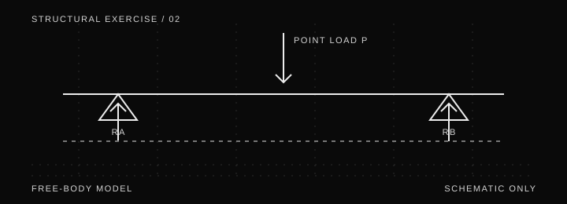

ENGINEERING EXERCISE / 002 · IDEALIZED
Simply supported beam:
reactions and bending.
A first-pass learning example for a straight, simply supported beam carrying one point load at midspan. The equations apply only to the stated idealized case.

Model assumptions
- A straight, prismatic beam with span length L.
- One vertical point load P applied exactly at midspan.
- One pin support and one roller support, with no additional loads.
- Static equilibrium and idealized supports; self-weight is excluded unless added separately.
Support reactions
Because the load is centered and the setup is symmetric, the vertical reactions are equal. From vertical force equilibrium, the two reactions together balance the applied load.
VERTICAL REACTIONS
RA = RB = P / 2
This result assumes the single centered load and no other vertical loads.
Maximum bending moment
For this same idealized case, the maximum bending-moment magnitude occurs at midspan:
MIDSPAN MOMENT
Mmax = P L / 4
Use consistent force and length units so the moment unit is force × length.
Check your understanding
- If the point load doubles while the span stays constant, what happens to each reaction?
- If the span doubles while the load stays constant, how does the maximum moment change?
- What changes if the load is not at midspan or if the beam's self-weight is included?
Educational example only. No beam dimensions, material properties, deflection checks, shear design, code checks or safety factors are supplied. These equations are not a substitute for a complete structural analysis or professional engineering review.